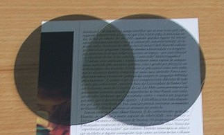
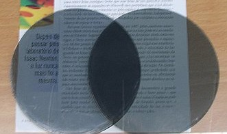

Polarização da Luz:
Conceito e exemplos:
Formula da Lei de Malus
•Luzes emitidas por fontes luminosas, por exemplo os raios de luzes solares, tem comportamento formados por ondas
eletromagnéticas que vibram em diversas direções durante a emissão, incidência e reflexão. Para cada onda do raio que vibra em uma
direção sempre há outro em um plano perpendicular à onda luminosa. Essa luz com movimento “perturbado” é chamada de luz natural ou
apenas de luz não polarizada.
•Existem diversas substâncias, materiais que ao serem atingidos pelos feixes de luz deixam passar apenas uma parte da onda luminosa, esse
acontecimento é denominado como polarização da luz. A luz que antes estava perturbada, se propagando em diversos planos e passa a propagar
em apenas um único plano.
•Um exemplo bom de "substâncias" são os filtros polarizadores, que trabalham como uma fenda, onde a luz normal que incide passa em
somente um plano. Caso sejam utilizados dois polarizadores (como na imagem abaixo) e seja feito o alinhamento dos mesmos em ângulo não
perpendicular, ou seja, que os ângulos não estejam defasados de 90°, a luz que passar pelo primeiro e atingir o segundo filtro, poderemos
ver o texto um pouco mais escuro, devido a polarização, mas, ainda sim, é possível ver o que está escrito.

•Na figura a baixo, os dois primeiros filtros são posicionados de tal forma que possuam um ângulo perpendicular entre si, com isso,
não podemos observar o texto escrito, pois a luz polarizada pelo primeiro filtro, ao atingir o segundo filtro está polarizada em
apenas um plano, que é defasado de 90° ao segundo filtro, com isso ao atingir o segundo filtro não é possível passar nenhum raio
de luz, pois não existe nenhuma onda nesse plano decorrente.

•O video abaixo mostra, na prática, o funcionamento de filtros polarizantes:
•I=I0⋅cos2θ
•Determina a intensidade final proporcionada pelo ângulo entre os filtros.